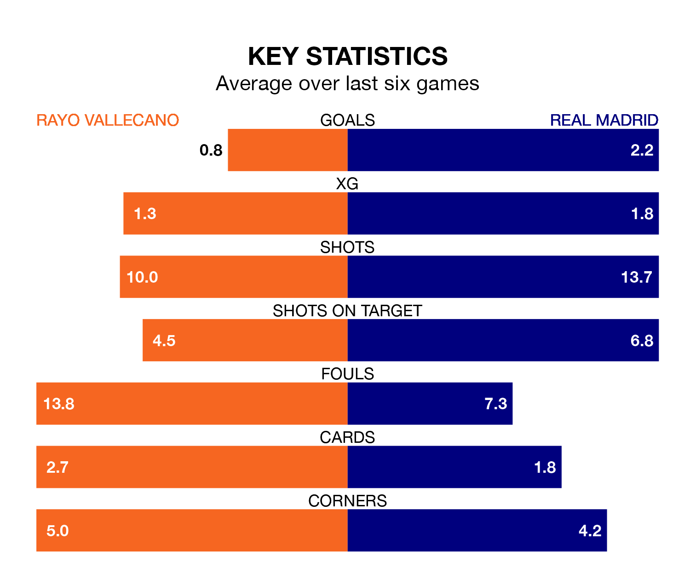

Real Madrid are strong favourites to take all three points despite Rayo Vallecano's home advantage in Sunday lunchtime's match at Estadio de Vallecas.
*Betting Company* are offering odds of 1.68 on Madrid sealing the win, with the visitors sitting first in La Liga table.
Rayo, who are 14th in the league and 37 points behind Madrid, are priced at 4.6 to win. A draw is set at 3.8.
With 52 goals in 24 games so far this season, Madrid are the league's joint-highest scorers with 2.2 goals per game. And they are conceding fewer than average, letting in 15 goals at a rate of 0.6 per game.
Rayo, meanwhile, are below average scorers, with 0.9 goals per game, compared to a league average of 1.3. They have conceded 1.3 goals per game.
In Jude Bellingham, the visitors have the league's sharpest shooter so far this season. He has notched 16 goals in 21 appearances.
His goal rate of one every 112 minutes is much quicker than that of Álvaro García, the home side's top scorer with a goal every 286 minutes, and a total of six goals in 21 games.
Rayo are in bad form in La Liga, with one win and a draw from their last six games.
With five wins and a draw over that period, Madrid's form is much better – they have taken 16 points from 18, compared to Rayo's four.
In the last 10 years, Rayo and Madrid have played each other on 12 occasions. Rayo won two of them, Madrid nine, and they drew once.
On average, Rayo scored 0.9 goals and Madrid 2.8 in those matches.
Their last meeting was on November 5, when they played out a 0-0 draw.
Rayo's last match was on Sunday, a 2-1 loss against RCD Mallorca, with García Rivera getting the goal for Rayo.
Madrid beat Girona 4-0 last time out, on February 10, with Bellingham (two), Rodrygo and Vinicius Junior on the scoresheet.
Updated: 13:30 (UTC), 12/02/24